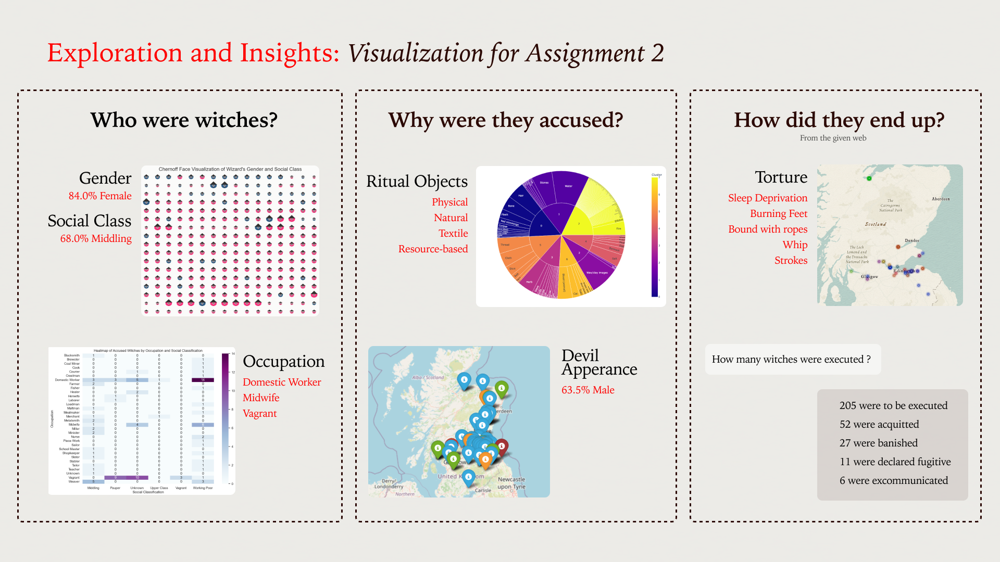
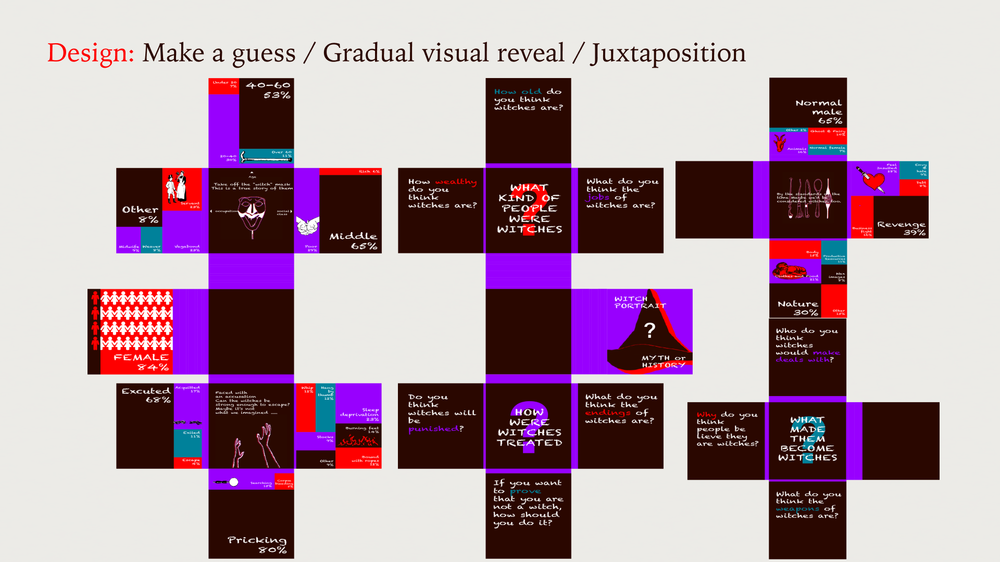
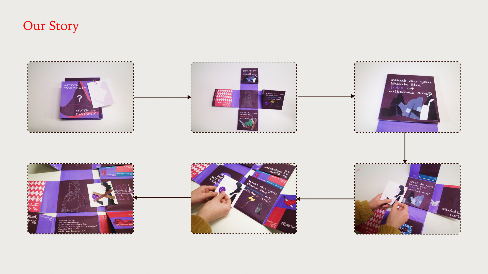
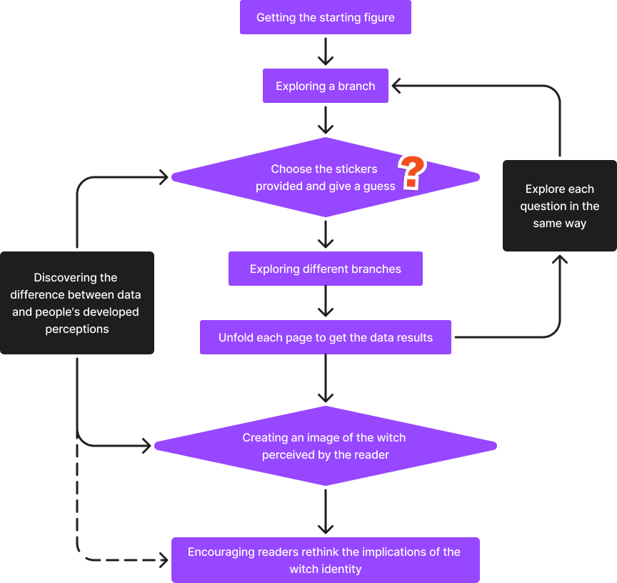

This project is a group project for my MSc in Design Informatics, we aim to create a interactive visualization to portraying the true history of witches and thereby overturn stereotypes and perceptions about gender. The project is based on a scottish witch database.
Before the final design, we used python to explore and visualize the given data. My visualizations are :
Historically, witches were feared and depicted as evil, fostering gender stereotypes. Our project challenges these views by portraying the true history of witches through data comics. This medium combines factual history with engaging visuals and interactivity, making it accessible and appealing to young people.
From our visualizations of Assignment 2 and the given website we found some interesting data:
Our research shows a strong link between witch hunts and patriarchal systems. The accused witches were typically vulnerable women, involved in female-led activities or roles. They were often portrayed as consorting with male devils, reflecting a tendency to see women as subordinate to men. This demonstrates modern attitudes where powerful women, like female politicians, are derogatorily labelled as witches.
The primary audience for this project is young people, particularly those Digital Natives. They are significantly influenced by movies, video games and fantasy literature. Their perception of witches might be shaped by modern artistic creations. This age group is at a critical stage of forming their understanding of societal norms and history. It helps to overturn stereotypes and perceptions about gender and witches formed at an early age.
This uses the narrative techniques from NAPA Cards, make a guess, gradual visual reveal and juxtaposition, which makes our piece more acceptable and appealing.
Finally, we made a pop-up book with interactive mechanisms. At the start, you will get an initial figure. After opening the book, you will see 3 main questions (the same as the 3 questions above) and some sub-questions. There are different stickers of options below these questions, and you can choose to decorate your figure. In the end, you will get a witch figure related to the image of a witch in your mind.
 